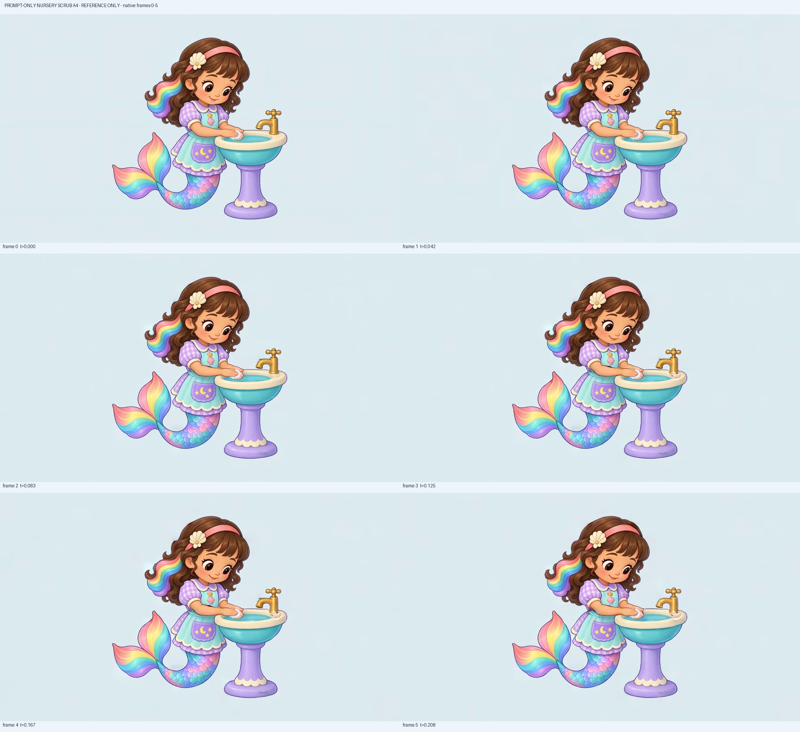
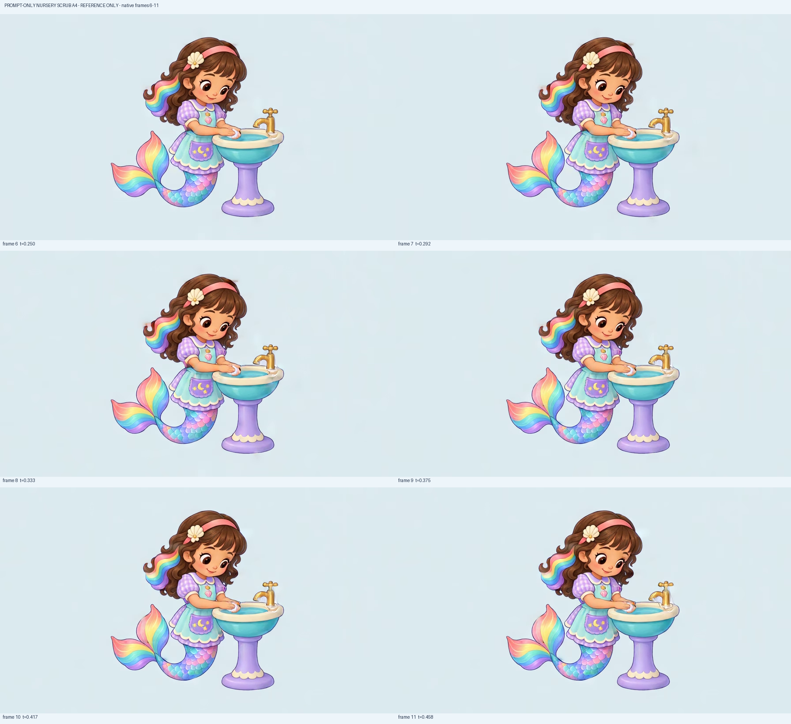
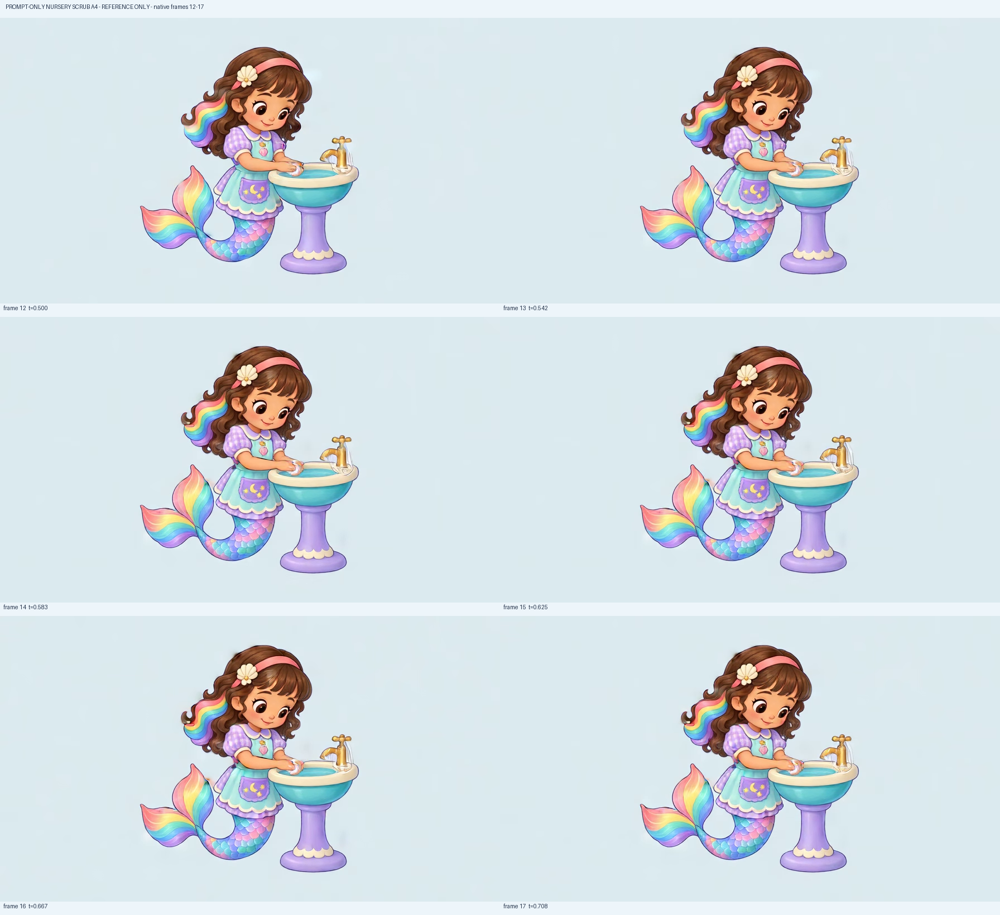
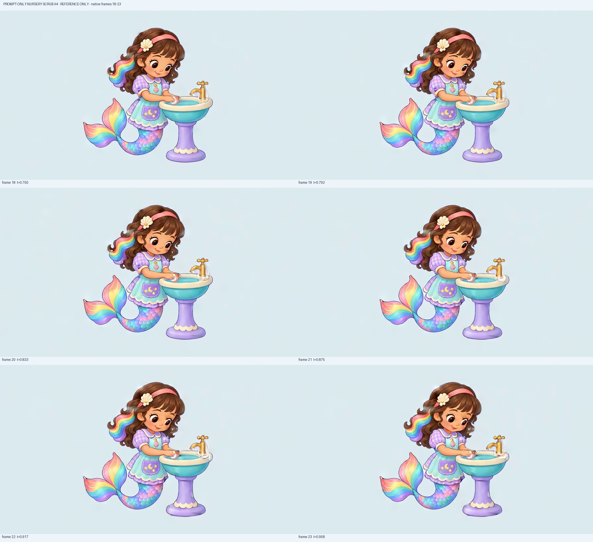
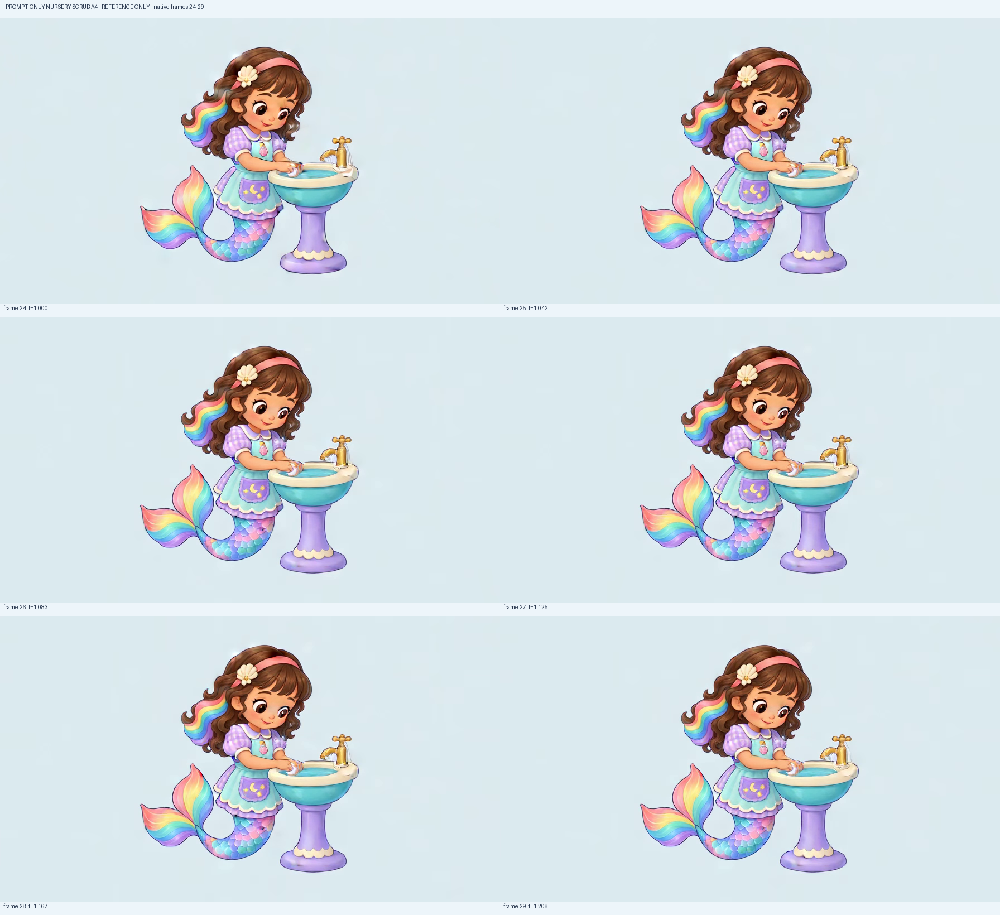
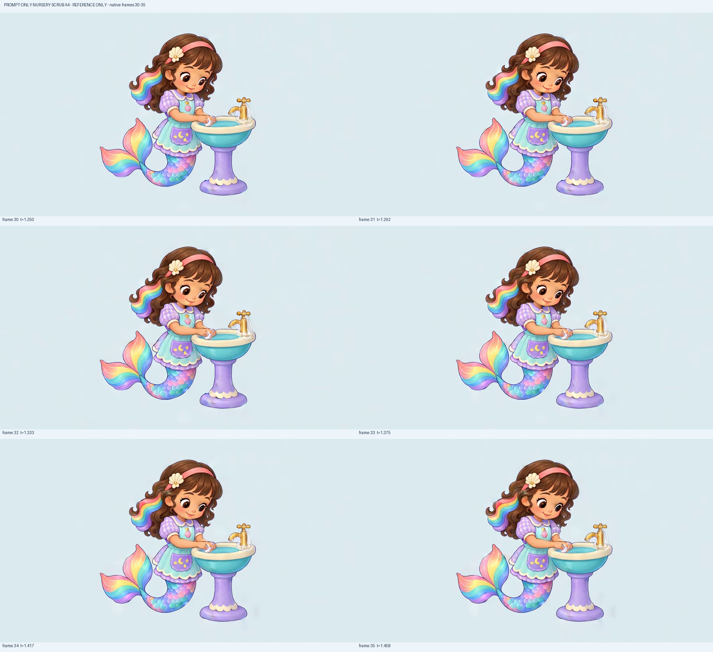
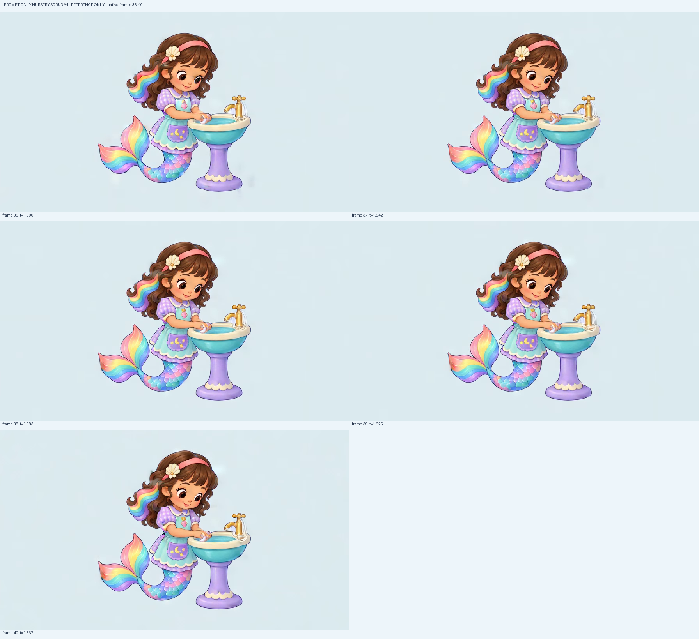

source identity · 4.5/5
Face, headband/flower and overall quiet helper silhouette remain recognizable; this is reference identity only.
Reference opinion only; current-game score and owner acceptance not transferred.
Face, headband/flower and overall quiet helper silhouette remain recognizable; this is reference identity only.
Reference opinion only; current-game score and owner acceptance not transferred.
Eyes retain the source downward attention to the low work area across the entire take.
Reference opinion only; current-game score and owner acceptance not transferred.
Both forearms stay connected and low palms overlap. Later fingertip/lather reshaping makes the exact open lower palm less distinct.
Reference opinion only; current-game score and owner acceptance not transferred.
No two clearly readable upper-palm forward/back strokes occur. Finger/foam reshaping and subtle whole cluster drift cannot substitute for sliding across the opposite palm.
Reference opinion only; current-game score and owner acceptance not transferred.
The previous tall head-to-basin arch is absent, an improvement. New pale traces at the off faucet/rim and intermittent hair highlights still lack a truthful water/soap source.
Reference opinion only; current-game score and owner acceptance not transferred.
Apron pocket motifs, scales/tail sheen and pedestal highlights crawl during the otherwise near-held body. No gross costume replacement, but temporal surface identity is insufficiently stable.
Reference opinion only; current-game score and owner acceptance not transferred.
Low contact and attentive gaze persist at both boundaries, but the directed action is missing; final fingertip/lather and pale fixture marks differ. No seamless-loop acceptance.
Reference opinion only; current-game score and owner acceptance not transferred.
Prompt-only refinement removes the most conspicuous A3 arch but retains near-held hands and false material/identity activity. Reference action remains below4.5 and is rejected.
Reference opinion only; current-game score and owner acceptance not transferred.

Each original896×512 canvas is pasted once at native size. QA labels only; no source pixels resampled.

Each original896×512 canvas is pasted once at native size. QA labels only; no source pixels resampled.

Each original896×512 canvas is pasted once at native size. QA labels only; no source pixels resampled.

Each original896×512 canvas is pasted once at native size. QA labels only; no source pixels resampled.

Each original896×512 canvas is pasted once at native size. QA labels only; no source pixels resampled.

Each original896×512 canvas is pasted once at native size. QA labels only; no source pixels resampled.

Each original896×512 canvas is pasted once at native size. QA labels only; no source pixels resampled.
Frame0 at0.000s: Original low overlapping palms, quiet attentive gaze and intact source silhouette. A still contact pose demonstrates no reciprocal action. Down gaze stays legible. Reference-only; current game/still-source scores unchanged.
Complete native896×512 original · t=0.000s
SHA-256 a7ed46b7e87077adb28d94e86be318aa09c809016aea2c05ab13335f65d8eb30
Frame1 at0.042s: Palm cluster remains close to the original contact; small edge/foam changes do not establish the intended forward stroke. Down gaze stays legible. Reference-only; current game/still-source scores unchanged.
Complete native896×512 original · t=0.042s
SHA-256 608723ae44ae6dcc72461d6b68c171e91d6cb4be9668f75149039e0c029a61db
Frame2 at0.083s: Palm cluster remains close to the original contact; small edge/foam changes do not establish the intended forward stroke. Down gaze stays legible. Reference-only; current game/still-source scores unchanged.
Complete native896×512 original · t=0.083s
SHA-256 3c138cde99387b62a2e610ce3a063f419aa2593fa5fb88e1ce4e49ad2e1e9c95
Frame3 at0.125s: Extra pale curl/highlight begins beside the faucet base and basin rim despite the tap-off instruction. Hand cluster remains nearly held. Down gaze stays legible. Reference-only; current game/still-source scores unchanged.
Complete native896×512 original · t=0.125s
SHA-256 b5e42b71eddad535a1d731c91c0644b35a1cc68a6856baff3a844e592ea6c9c2
Frame4 at0.167s: Extra pale curl/highlight begins beside the faucet base and basin rim despite the tap-off instruction. Hand cluster remains nearly held. Down gaze stays legible. Reference-only; current game/still-source scores unchanged.
Complete native896×512 original · t=0.167s
SHA-256 26169e9e2d72a8016fb469b9fa24e6f97fc3ae587416b16a69ace906d33b1a18
Frame5 at0.208s: Extra pale curl/highlight begins beside the faucet base and basin rim despite the tap-off instruction. Hand cluster remains nearly held. Down gaze stays legible. Reference-only; current game/still-source scores unchanged.
Complete native896×512 original · t=0.208s
SHA-256 a956d75d0477a3ec00527c618a34f0af9edbdfdfa8480eb0b1f3b3b9741b0492
Frame6 at0.250s: Extra pale curl/highlight begins beside the faucet base and basin rim despite the tap-off instruction. Hand cluster remains nearly held. Down gaze stays legible. Reference-only; current game/still-source scores unchanged.
Complete native896×512 original · t=0.250s
SHA-256 89f63d12170b716284d88912a258e65fe01b0de374e7077e1e1ad33cdefa9d1b
Frame7 at0.292s: Extra pale curl/highlight begins beside the faucet base and basin rim despite the tap-off instruction. Hand cluster remains nearly held. Down gaze stays legible. Reference-only; current game/still-source scores unchanged.
Complete native896×512 original · t=0.292s
SHA-256 a4d076d977fc4dd46b79c1abab6fcf07d805297bf994d0eab272744a2bc2def3
Frame8 at0.333s: Thin pale traces accompany the spout/fixture and intermittent hair-edge highlights. Slight finger/lather deformation does not show an upper palm sliding across a distinct lower palm. Down gaze stays legible. Reference-only; current game/still-source scores unchanged.
Complete native896×512 original · t=0.333s
SHA-256 740cf009fba42cd895ae85e0f9aa6ff75355a3adbff09214ed91716b6c973e58
Frame9 at0.375s: Thin pale traces accompany the spout/fixture and intermittent hair-edge highlights. Slight finger/lather deformation does not show an upper palm sliding across a distinct lower palm. Down gaze stays legible. Reference-only; current game/still-source scores unchanged.
Complete native896×512 original · t=0.375s
SHA-256 3cec4929b1b24a62bb9d1044cac4a5d37aafa6d2f7a3be4a08f40f56195fdc63
Frame10 at0.417s: Thin pale traces accompany the spout/fixture and intermittent hair-edge highlights. Slight finger/lather deformation does not show an upper palm sliding across a distinct lower palm. Down gaze stays legible. Reference-only; current game/still-source scores unchanged.
Complete native896×512 original · t=0.417s
SHA-256 8c753fa20e6e057bd563de360f81d7b99d706c1e0cb1d4c11a58fe68f21d4012
Frame11 at0.458s: Thin pale traces accompany the spout/fixture and intermittent hair-edge highlights. Slight finger/lather deformation does not show an upper palm sliding across a distinct lower palm. Down gaze stays legible. Reference-only; current game/still-source scores unchanged.
Complete native896×512 original · t=0.458s
SHA-256 eee8ed0602bbe27d5b87ed5a6e3d92ccd5b634e73294a89bfa1dd433abd3bdbf
Frame12 at0.500s: Thin pale traces accompany the spout/fixture and intermittent hair-edge highlights. Slight finger/lather deformation does not show an upper palm sliding across a distinct lower palm. Down gaze stays legible. Reference-only; current game/still-source scores unchanged.
Complete native896×512 original · t=0.500s
SHA-256 973fef29db1b89ec548ec03c8077ccab86aee42ef9ed1bc2e64fb75a0ee2904b
Frame13 at0.542s: Thin pale traces accompany the spout/fixture and intermittent hair-edge highlights. Slight finger/lather deformation does not show an upper palm sliding across a distinct lower palm. Down gaze stays legible. Reference-only; current game/still-source scores unchanged.
Complete native896×512 original · t=0.542s
SHA-256 a8efc32347fc9fff7969fcd016d6065c73fbd36dfb508d40b76db701a4ffbb19
Frame14 at0.583s: Thin pale traces accompany the spout/fixture and intermittent hair-edge highlights. Slight finger/lather deformation does not show an upper palm sliding across a distinct lower palm. Down gaze stays legible. Reference-only; current game/still-source scores unchanged.
Complete native896×512 original · t=0.583s
SHA-256 e146be2fbe35b6ec2770bdb80ebf3d7fa1ec2c881372bf8794281ba513b16848
Frame15 at0.625s: Thin pale traces accompany the spout/fixture and intermittent hair-edge highlights. Slight finger/lather deformation does not show an upper palm sliding across a distinct lower palm. Down gaze stays legible. Reference-only; current game/still-source scores unchanged.
Complete native896×512 original · t=0.625s
SHA-256 f555253442bf587deb125cfdb11ffde0d592ee37d1b1607457db7b16cbbf013a
Frame16 at0.667s: Thin pale traces accompany the spout/fixture and intermittent hair-edge highlights. Slight finger/lather deformation does not show an upper palm sliding across a distinct lower palm. Down gaze stays legible. Reference-only; current game/still-source scores unchanged.
Complete native896×512 original · t=0.667s
SHA-256 ce243675c3b02f54ed832d34b27fc8f57867d6faf4cb1a893e81d3d6c6f52ae5
Frame17 at0.708s: Thin pale traces accompany the spout/fixture and intermittent hair-edge highlights. Slight finger/lather deformation does not show an upper palm sliding across a distinct lower palm. Down gaze stays legible. Reference-only; current game/still-source scores unchanged.
Complete native896×512 original · t=0.708s
SHA-256 2588769a98d91b17405a121a050971aaa6b62812c6dc3a63b70d51d80236fc88
Frame18 at0.750s: Thin pale traces accompany the spout/fixture and intermittent hair-edge highlights. Slight finger/lather deformation does not show an upper palm sliding across a distinct lower palm. Down gaze stays legible. Reference-only; current game/still-source scores unchanged.
Complete native896×512 original · t=0.750s
SHA-256 bbd07e3ded9ece2d0e0da9f3eb0eab703eec89508d5421faf90949089a3023b2
Frame19 at0.792s: Thin pale traces accompany the spout/fixture and intermittent hair-edge highlights. Slight finger/lather deformation does not show an upper palm sliding across a distinct lower palm. Down gaze stays legible. Reference-only; current game/still-source scores unchanged.
Complete native896×512 original · t=0.792s
SHA-256 6a6d4b57559b6951717629216e4583b0f9610dc753399b1b33934544bce5ff12
Frame20 at0.833s: Hands change finger/lather shape near the same position instead of two readable reciprocal cycles. Hair, costume/tail and support highlights fluctuate; extra pale fixture traces remain visible. The large A3 head-to-basin arch is absent. Down gaze stays legible. Reference-only; current game/still-source scores unchanged.
Complete native896×512 original · t=0.833s
SHA-256 27d4ca11c6bd34283199113f5da38659ddb44ff02e7ecced8b40965ccf944ece
Frame21 at0.875s: Hands change finger/lather shape near the same position instead of two readable reciprocal cycles. Hair, costume/tail and support highlights fluctuate; extra pale fixture traces remain visible. The large A3 head-to-basin arch is absent. Down gaze stays legible. Reference-only; current game/still-source scores unchanged.
Complete native896×512 original · t=0.875s
SHA-256 57299c28f8ef976740312b93986e0102a2937c51ce2758ed612398d320eee3ba
Frame22 at0.917s: Hands change finger/lather shape near the same position instead of two readable reciprocal cycles. Hair, costume/tail and support highlights fluctuate; extra pale fixture traces remain visible. The large A3 head-to-basin arch is absent. Down gaze stays legible. Reference-only; current game/still-source scores unchanged.
Complete native896×512 original · t=0.917s
SHA-256 f054ad178c26892165aa64c0119f5f1a24afe130e2115a48d7d938b4b892cdb8
Frame23 at0.958s: Hands change finger/lather shape near the same position instead of two readable reciprocal cycles. Hair, costume/tail and support highlights fluctuate; extra pale fixture traces remain visible. The large A3 head-to-basin arch is absent. Down gaze stays legible. Reference-only; current game/still-source scores unchanged.
Complete native896×512 original · t=0.958s
SHA-256 c29b508ce0747dd90762b7c6e1c51c657c009ac951ce0b8ac82818ccc8b0b2b8
Frame24 at1.000s: Hands change finger/lather shape near the same position instead of two readable reciprocal cycles. Hair, costume/tail and support highlights fluctuate; extra pale fixture traces remain visible. The large A3 head-to-basin arch is absent. Down gaze stays legible. Reference-only; current game/still-source scores unchanged.
Complete native896×512 original · t=1.000s
SHA-256 67e8b737b032c2f92a35bb340a77568896ba24ab3679ecaf1250ea20bff630ee
Frame25 at1.042s: Hands change finger/lather shape near the same position instead of two readable reciprocal cycles. Hair, costume/tail and support highlights fluctuate; extra pale fixture traces remain visible. The large A3 head-to-basin arch is absent. Down gaze stays legible. Reference-only; current game/still-source scores unchanged.
Complete native896×512 original · t=1.042s
SHA-256 623b0ef0b47e73b04ce6c28c4227f54b083a5e80407f88745cebd724f30fe57c
Frame26 at1.083s: Hands change finger/lather shape near the same position instead of two readable reciprocal cycles. Hair, costume/tail and support highlights fluctuate; extra pale fixture traces remain visible. The large A3 head-to-basin arch is absent. Down gaze stays legible. Reference-only; current game/still-source scores unchanged.
Complete native896×512 original · t=1.083s
SHA-256 1c67810c2e5f3c8f74d78fec75d87a93003476968d1ca08c315b00cd7f10a5c0
Frame27 at1.125s: Hands change finger/lather shape near the same position instead of two readable reciprocal cycles. Hair, costume/tail and support highlights fluctuate; extra pale fixture traces remain visible. The large A3 head-to-basin arch is absent. Down gaze stays legible. Reference-only; current game/still-source scores unchanged.
Complete native896×512 original · t=1.125s
SHA-256 95e12a8098497d136b6b4aebdce406f8a45b3a695c2e16ac83730e716870a163
Frame28 at1.167s: Hands change finger/lather shape near the same position instead of two readable reciprocal cycles. Hair, costume/tail and support highlights fluctuate; extra pale fixture traces remain visible. The large A3 head-to-basin arch is absent. Down gaze stays legible. Reference-only; current game/still-source scores unchanged.
Complete native896×512 original · t=1.167s
SHA-256 37ceef96ff8bd481977c31ee1f87cee9e1a31f358a50a9b8f646a54e8389d78e
Frame29 at1.208s: Hands change finger/lather shape near the same position instead of two readable reciprocal cycles. Hair, costume/tail and support highlights fluctuate; extra pale fixture traces remain visible. The large A3 head-to-basin arch is absent. Down gaze stays legible. Reference-only; current game/still-source scores unchanged.
Complete native896×512 original · t=1.208s
SHA-256 7549de6f29efc5523bba72fbbe800c0fd7a1e6f10a6824457a34dde28187c872
Frame30 at1.250s: Hands change finger/lather shape near the same position instead of two readable reciprocal cycles. Hair, costume/tail and support highlights fluctuate; extra pale fixture traces remain visible. The large A3 head-to-basin arch is absent. Down gaze stays legible. Reference-only; current game/still-source scores unchanged.
Complete native896×512 original · t=1.250s
SHA-256 35f6909d2dd0faa08c868cd7a37bce14733b4b06f41182cd7b82870a0b35692b
Frame31 at1.292s: Hands change finger/lather shape near the same position instead of two readable reciprocal cycles. Hair, costume/tail and support highlights fluctuate; extra pale fixture traces remain visible. The large A3 head-to-basin arch is absent. Down gaze stays legible. Reference-only; current game/still-source scores unchanged.
Complete native896×512 original · t=1.292s
SHA-256 456dee2a49f7f76644140d28e9db10365a3386f472baf248c1e27bf4834f31ef
Frame32 at1.333s: Hands change finger/lather shape near the same position instead of two readable reciprocal cycles. Hair, costume/tail and support highlights fluctuate; extra pale fixture traces remain visible. The large A3 head-to-basin arch is absent. Down gaze stays legible. Reference-only; current game/still-source scores unchanged.
Complete native896×512 original · t=1.333s
SHA-256 70b7167c22724ce25258d593247161e4534f85a115f2563f786ca58d75158490
Frame33 at1.375s: Hands change finger/lather shape near the same position instead of two readable reciprocal cycles. Hair, costume/tail and support highlights fluctuate; extra pale fixture traces remain visible. The large A3 head-to-basin arch is absent. Down gaze stays legible. Reference-only; current game/still-source scores unchanged.
Complete native896×512 original · t=1.375s
SHA-256 dd1ecc5b456d4404e6f4eec80c63d1c634f9a0f766e182823e8f7f1a259e1892
Frame34 at1.417s: Hands change finger/lather shape near the same position instead of two readable reciprocal cycles. Hair, costume/tail and support highlights fluctuate; extra pale fixture traces remain visible. The large A3 head-to-basin arch is absent. Down gaze stays legible. Reference-only; current game/still-source scores unchanged.
Complete native896×512 original · t=1.417s
SHA-256 c5b2f9498b07c659a3a0b3b4170868bb67d8a49a812727d6361ae182c8bfda26
Frame35 at1.458s: Hands change finger/lather shape near the same position instead of two readable reciprocal cycles. Hair, costume/tail and support highlights fluctuate; extra pale fixture traces remain visible. The large A3 head-to-basin arch is absent. Down gaze stays legible. Reference-only; current game/still-source scores unchanged.
Complete native896×512 original · t=1.458s
SHA-256 f376e04867b23c8721143bc0856dcd1ecba5e5f7dc7e490300d27a38fdfd39ed
Frame36 at1.500s: Hands change finger/lather shape near the same position instead of two readable reciprocal cycles. Hair, costume/tail and support highlights fluctuate; extra pale fixture traces remain visible. The large A3 head-to-basin arch is absent. End pose retains joined low contact, but it never completes the directed two strokes or proves a seamless return. Down gaze stays legible. Reference-only; current game/still-source scores unchanged.
Complete native896×512 original · t=1.500s
SHA-256 4bbb29bf2df16ac4b4b99af4eb915ed2f65e95dd59ecf0d95eb1924e4ca75f07
Frame37 at1.542s: Hands change finger/lather shape near the same position instead of two readable reciprocal cycles. Hair, costume/tail and support highlights fluctuate; extra pale fixture traces remain visible. The large A3 head-to-basin arch is absent. End pose retains joined low contact, but it never completes the directed two strokes or proves a seamless return. Down gaze stays legible. Reference-only; current game/still-source scores unchanged.
Complete native896×512 original · t=1.542s
SHA-256 14b150c768dcf5757a69e2cb9f08569435a777531018fcc43adf32d0e5e958ac
Frame38 at1.583s: Hands change finger/lather shape near the same position instead of two readable reciprocal cycles. Hair, costume/tail and support highlights fluctuate; extra pale fixture traces remain visible. The large A3 head-to-basin arch is absent. End pose retains joined low contact, but it never completes the directed two strokes or proves a seamless return. Down gaze stays legible. Reference-only; current game/still-source scores unchanged.
Complete native896×512 original · t=1.583s
SHA-256 de8f2252e827e947d2466e81e3f1db86869a93f067378200d4ea85e41ede1912
Frame39 at1.625s: Hands change finger/lather shape near the same position instead of two readable reciprocal cycles. Hair, costume/tail and support highlights fluctuate; extra pale fixture traces remain visible. The large A3 head-to-basin arch is absent. End pose retains joined low contact, but it never completes the directed two strokes or proves a seamless return. Down gaze stays legible. Reference-only; current game/still-source scores unchanged.
Complete native896×512 original · t=1.625s
SHA-256 3fd3560def01e80f0cbc1a5949df1fae055b6a61984d21b7ad452eaac9b88e8b
Frame40 at1.667s: Hands change finger/lather shape near the same position instead of two readable reciprocal cycles. Hair, costume/tail and support highlights fluctuate; extra pale fixture traces remain visible. The large A3 head-to-basin arch is absent. End pose retains joined low contact, but it never completes the directed two strokes or proves a seamless return. Down gaze stays legible. Reference-only; current game/still-source scores unchanged.
Complete native896×512 original · t=1.667s
SHA-256 f3da2611b2dad76f7a9c9a9c620c6b83de1b2e5484247ae557d7ec4cafc72269